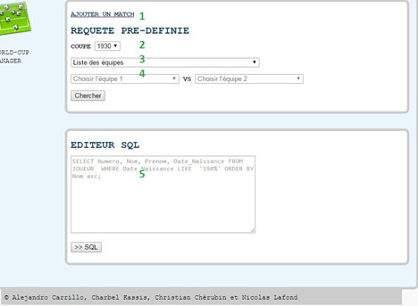
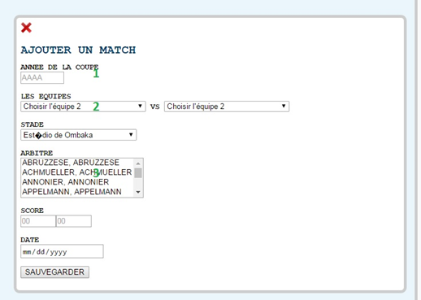
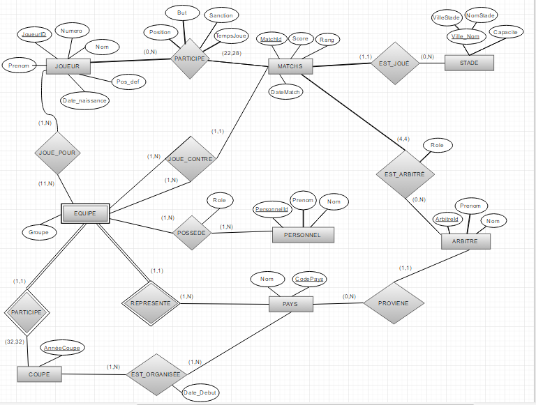

Alejandro Carrillo
Charbel Kassis
Christian Chérubin
Nicolas Lafond
BACCALAURÉAT EN INFORMATIQUE
FACULTÉ DES ARTS ET DES SCIENCES
TRAVAIL PRÉSENTÉ À Mustapha Boushaba
DANS LE CADRE DU COURS IFT2935
BASES DE DONNÉES
Description du Projet
Le sujet du projet est la création d'une base de donnée de la coupe du monde de la FIFA (Fédération Internationale de Football Association). Cette
base de données contient toutes les informations pertinantes d'une coupe depuis la création de la FIFA en 1930. On y trouve la liste des équipes, des joueurs,
des pays, des arbitres, etc. De plus, il est possible d'y ajouter de nouvelles données ainsi que de modifier des anciennes avec des commandes SQL dans une boîte de texte.
Le projet a été réalisé sur la page web suivante http://www-ens.iro.umontreal.ca/~cherubic/coupe/
avec PHP et Javascript comme languages de programmation et MySQL comme language de requêtes. L'interface de la page web permet de faire des requêtes sans
passer par du SQL, il suffit de choisir parmis les 10 requêtes "SELECT" conçues en PHP. On peut aussi choisir d'ajouter des matchs.
Technologies
Rapport Technologique
Notre application de gestion de coupe du monde exploite diverses technologies. La base de données est relationnelle et est conçu en Mysql 14.14. Du coté de l’application, on a utilisé php 5.6.19, Javascript, html 5 et css 2.
Justification choix Technologies
Le choix des technologies cités plus haut, est basé sur leur facilité d’implémentation, leur portabilité et leur coût d’utilisation.
Le choix de Mysql est surtout porté sur le fait qu’il est de loin plus portable par rapport à Oracle qu’est plus commercial. Mysql est supporté par tous les systèmes d’exploitation. Par exemple Mysql est supporté par Symbian OS, pourtant Oracle non.
Ainsi on a préféré d’utiliser Php parce qu’il est utilisé par plus de 80% des sites web hébergés actuellement.
Ces logiciels sont tous Open Source, et sont disponibles au Diro. De plus, le Diro offre une solide documentation pour coder, gérer et déployer ces types d’applications sur ses propres serveurs.
Donc en se basant sur les raisons précitées, et sur l’interface offerte par le Diro, pour asseoir notre choix technologique.
Utilisation de l’application
L’application est très simple à utiliser. Sur la capture_1 et capture_2, les fonctionnalités sont expliquées.
Capture_1:
‘Ajouter un Match’ permet d’ajouter un nouveau match dans le système. Ce lien affichera automatiquement la capture_2 et cachera la 2e partie de la capture_1.
‘Coupe’ permet de sélectionner la coupe a travers laquelle on veut questionner questionner la base.
La liste de requêtes sont les suivantes:
Liste des équipes
Liste des joueurs de la finale
La liste des stades ayant des matchs
La liste des joueurs d'une équipe
Liste des matchs entre deux équipes
La liste des joueurs qui ont marque a la finale
Le nom et le prénom des membres du personnel d'une équipe
La date de la finale de la coupe
Le nombre de coupes organisée par pays
Choix de(s) équipe(s). Dans ces menus les équipes sont représentes par leur pays. Il suffit de presser ‘Chercher’ pour envoyer la requête.
dans le point 5, il s’agit d’un super éditeur sql, a travers lequel, on peut questionner directement la base en faisant des requêtes sql.
Capture_2:
La capture_2 s’affiche seulement si ‘Ajouter un Match’ dans la capture_1 a été choisie.
‘Année de la coupe’. on défini ici l’année de la coupe pour dans laquelle on veut inscrire le match. Si l’année entrée n’existe pas encore dans la base, on va creer une nouvelle coupe pour cette annee et la match sera associé a cette année. Si l’annee existe deja, le match en sera associé.
Choix de(s) équipe(s). Dans ces menus les équipes sont représentes par leur pays.
En gardant le bouton shift du clavier enfoncé, on peut selectionner au moins 4 arbitres. Il suffit de renseigner les autres champs et cliquer sur ‘Sauvegarder’. Le systeme vous dira que les données ont été enregistrées avec succès.
Capture_1

Capture_2

Modèle Entité-Relation

Les entités:
JOUEUR
L'entité qui représente le joueur d'une équipe.
Joueur_ID: la clé qui identifie un joueur.
Prénom: le prénom du joueur.
Nom: le nom du joueur.
Numéro: le numéro du joueur.
Pos_Def: la position par défaut du joueur, c'est-à-dire le rôle qu'il joue normalement.
Date_naissance: la date de naissance du joueur, peut être utilisée pour calculer l'âge.
MATCHS
L'entité qui représente les matchs joués par deux équipes.
Match_ID: la clé qui identifie un match.
Score: le score du match.
Rang: identifie la position du match par rapport au tournois (semi-finale, finale, etc).
DateMatch: la date durant laquelle s'est déroulé le match.
STADE
L'entité qui représente l'endroit où se déroule les matchs.
Ville_Nom: la clé qui identifie un stade, se compose de deux attributs: la ville où se trouve le stade ainsi que le nom du stade.
Capacite: la capacité maximale de spectateurs du stade.
COUPE
L'entité qui représente le tournois de la coupe du monde.
AnneeCoupe: la clé qui identifie la coupe. C'est l'année durant laquelle s'est déroulé le tournois.
PAYS
L'entité qui représente tous les pays qui ont participé à la coupe du monde.
CodePays: la clé qui identifie le pays. C'est une chaîne de 3 caractère basée sur le nom du pays.
Nom: le nom complet du pays.
EQUIPE
L'entité faible qui représente une équipe dans la coupe du monde. Elle dépend de la coupe (de l'année).
Groupe: le groupe auquel appartient l'équipe dans le tournois. Cela determine contre qui l'équipe va jouer.
PERSONNEL
L'entité qui représente un membre du staff technique d'une équipe.
Personnel_ID: la clé qui identifie le personnel.
Prénom: le prénom du personnel.
Nom: le nom du personnel.
ARBITRE
L'entité qui représente les arbitres de la FIFA.
Arbitre_ID: la clé qui indentifie l'arbitre.
Prénom: le prénom de l'arbitre.
Nom: le nom de l'arbitre.
Les relations:
PARTICIPE
Relie JOUEUR à MATCHS
Un joueur participe à 0 ou n matchs, un match peuvent y participer 22 ou plus de joueurs.
Position: La position d'un joueur dans un match. Elle peut être différente de la position par defaut du joueur.
But: Le nombre de buts qu'a marqués un joueur dans un match.
Sanction: Cartons rouge, jaune (ou aucune) qu'un joueur a obtenu dans un match.
TempsJoue: Le temps qu'un joueur à jouer dans un match.
EST_JOUE
Relie MATCHS à STADE
Un match se déroule dans un seul stade, un stade y sont joués aucun ou plusieurs matchs.
JOUE_POUR
Relie JOUEUR à EQUIPE
Un joueur joue pour une ou plusieurs équipes (Exemple: France 2010 et France 2014 sont deux équipes différentes dans la base de donnée, même si
conceptuellement c'est la même équipe), une équipe a au minimum 11 joueurs.
JOUE_CONTRE
Relie EQUIPE à EQUIPE à MATCHS
Une équipe joue contre une ou plusieurs autres équipes dans un match.
EST_ARBITRE
Relie ARBITRE à MATCHS
Un arbitre participe à aucuns ou plusieurs matchs, un match est arbitré par 4 arbitres.
Role: le rôle de l'arbitre dans le match. (Principal, 1er assistant, 2eme assistant, 3eme assistant)
POSSEDE
Relie PERSONNEL à EQUIPE
Un personnel travaille pour une ou plusieurs équipes, une équipe à un ou plusieurs personnels
Role: le rôle du personnel dans l'équipe.
PARTICIPE
Relie EQUIPE à COUPE
Une équipe participe à une seule coupe (Exemple: France 2010 ne participe qu'en 2010), une coupe y participent 32 équipes.
REPRESENTE
Relie EQUIPE à PAYS
Une équipe représente un pays, un pays est représenté par une ou plusieurs équipes. (Exemple: La France est représentée par les équipes France 2010 et France 2014)
PROVIENT
Relie ARBITRE à PAYS
Un arbitre est originaire d'un pays, un pays y proviennent aucuns ou plusieurs arbitres.
EST_ORGANISEE
Relie COUPE à PAYS
Une coupe est organisée dans un ou plusieurs pays (Exemple: FIFA 2002 s'est déroulé dans 2 pays), un pays organise une ou plusieurs coupes.
Date_Debut: Le début du premier match dans le pays hôte.
Modèle Relationnel
Le modèle relation est constitué des 14 relations. La plupart sont entités réelles, et d’autres proviennent des relations plusieurs à plusieurs. Il modélise un gestionnaire de tournoi. Et non une fédération.
Ainsi on a choisi d’identifier une coupe du monde par l’année dans laquelle elle se déroule. Le concept de coupe du monde est la clé de notre modèle car il ne peut pas exister une équipe sans avoir au préalable une coupe.
Donc une fois la coupe est crée, on peut ajouter des équipes, leurs attribués des joueurs d'où la relation JOUE_POUR; On peut définir des matchs avec la relation JOUE_CONTRE, définir leur score, et leur rang, leur affecter des stade et arbitres. Aussi on peut attribuer à chaque équipe un staff technique d'où la relation ‘POSSÈDE’.
Notre modèle reflète l’idée que chaque coupe est unique, et qu’il y aura 32 nouvelles équipes. Donc l'équipe HAI2010 (Haiti 2010) n’est pas la même que HAI2014. Même s’il peut arriver que ces 2 équipes regroupent les mêmes joueurs. Ainsi avec la relation JOUE_POUR, on peut définir assez facilement les joueurs de chaque équipe avec des Foreign Key, et du coup cela nous permettra de savoir les coupes qu’un joueur a participé. On peut le voir de la même façon pour les matchs, car il peut arriver que deux équipes s’est affrontés en 2014, puis en 2014. Donc pour garder ces historiques on a définir la relation JOUE_CONTRE qui nous fourni exactement les informations concernant les matchs entre deux équipes différentes.
JOUEUR(Joueur_ID, Numero, Nom, Prenom,Pos_Def,Date_Naissance)
MATCHS(Match_ID, Score, Rang, DateMatch,Stade_ID*)
STADE(Stade_ID,Ville, Nom, Capacite)
ARBITRE(Arbitre_ID, Nom, Prenom,Nationalite*)
COUPE(Annee_Coupe)
PAYS(Code_Pays, Nom)
PERSONNEL (Personnel_ID, Nom , Prenom)
EQUIPE(Code_Pays*,Annee_Coupe*,Groupe)
Note: Annee_Coupe* est une référence vers la clé primaire de la relation COUPE
Code_Pays* est une référence vers la clé primaire de la relation PAYS
EST_ORGANISÉE(Annee_Coupe*, Code_Pays*,Date_Debut)
Note: Annee_Coupe* est une référence vers la clé primaire de la relation COUPE
Code_Pays* est une référence vers la clé primaire de la relation PAYS
POSSEDE(Code_Pays*,Annee_Coupe*, Personnel_ID*,Role )
Note: Code_Pays*,Annee_Coupe* est une référence vers la clé primaire de la relation EQUIPE
JOUE_POUR(Joueur_ID*,Code_Pays*,Annee_Coupe*)
Note: Code_Pays*,Annee_Coupe* est une référence vers la clé primaire de la relation EQUIPE
PARTICIPE(Joueur_ID*,Match_ID*,Position,Buts, Sanction, Temps_Joue )
EST_ARBITRE(Match_ID*,Arbitre_ID*,Role)
JOUE_CONTRE(Match_ID*,Code_Local*,Annee_Local*,Code_Visitant*,Annee_Visitant*)
Note: Code_Local*,Annee_Local*,Code_Visitant*,Annee_Visitant* sont des references vers la clé primaire de la
relation EQUIPE
Detail Implementation Requetes
SELECT 'LISTE JOUEURS DE LA FINAL DE LA COUPE 2010' AS ' ';
SELECT DISTINCT j.Nom,j.Prenom,j.Numero,jp.code_pays AS Pays, pays.Nom as Nom_Pays,p.Buts,p.Position
FROM JOUEUR j, JOUE_POUR jp, PARTICIPE p, PAYS pays
WHERE j.joueur_id=jp.joueur_id AND j.joueur_id=p.joueur_id AND pays.code_pays=jp.code_pays
AND p.match_id=(SELECT match_id FROM MATCHS WHERE rang=64 AND datematch LIKE '2010%');
SELECT 'LISTE DE STADES OU SONT JOUES LES MATCHS DE LA COUPE 2010' AS ' ';
SELECT DISTINCT s.Nom, s.Ville, s.Capacite
FROM STADE s, MATCHS m
WHERE m.datematch LIKE '2010%' AND s.stade_ID=m.stade_id;
SELECT 'LISTE JOUEURS DE L''EQUIPE South Africa POUR L''ANNEE 2010' AS ' ';
SELECT j.Nom, j.Prenom, j.Pos_Def, jp.code_pays AS Pays, p.Nom AS Nom_Pays, c.annee_coupe AS Annee
FROM JOUE_POUR jp, JOUEUR j, PAYS p, COUPE c
WHERE jp.annee_coupe=2010
AND jp.code_pays=(SELECT code_pays FROM PAYS WHERE nom='South Africa')
AND p.code_pays=(SELECT code_pays FROM PAYS WHERE nom='South Africa')
AND j.joueur_id=jp.joueur_id AND c.annee_coupe=jp.annee_coupe;
-- requetes des matches entre deux equipes qui affiche les score, date, arbitre et nationalite de l'arbitre
SELECT jc.annee_local as Annee,jc.pays_local as Equipe, m.Score, jc.pays_visitant as Equipe, m.datematch as Date_Match, a.Nom as Nom_Arbitre, a.Prenom as Prenom_Arbitre, a.Nationalite
FROM JOUE_CONTRE jc, MATCHS m, ARBITRE a, EST_ARBITRE ea
WHERE jc.annee_local=2010
AND m.match_id = jc.match_id
AND ea.match_id = jc.match_id
AND ea.arbitre_id=a.arbitre_id
AND ea.role='PRIN'
AND (jc.pays_visitant='NED' OR jc.pays_visitant='ESP')
AND (jc.pays_local='NED' OR jc.pays_local='ESP')
;
SELECT 'LISTE JOUEURS QUI ONT MARQUE DES BUTS DANS LA FINAL DE LA COUPE 2010' AS ' ';
SELECT DISTINCT j.Nom,j.Prenom,j.Numero,jp.code_pays AS Pays, pays.Nom as Nom_Pays,p.Buts,p.Position
FROM JOUEUR j, JOUE_POUR jp, PARTICIPE p, PAYS pays
WHERE p.buts>0 AND j.joueur_id=jp.joueur_id AND j.joueur_id=p.joueur_id AND pays.code_pays=jp.code_pays
AND p.match_id=(SELECT match_id FROM MATCHS WHERE rang=64 AND datematch LIKE '2010%');
Voici quelques requêtes prises d'un script SQL. Le reste des details peuvent être trouvés dans le code et scripts fournis le jour de la presentation de l'app.